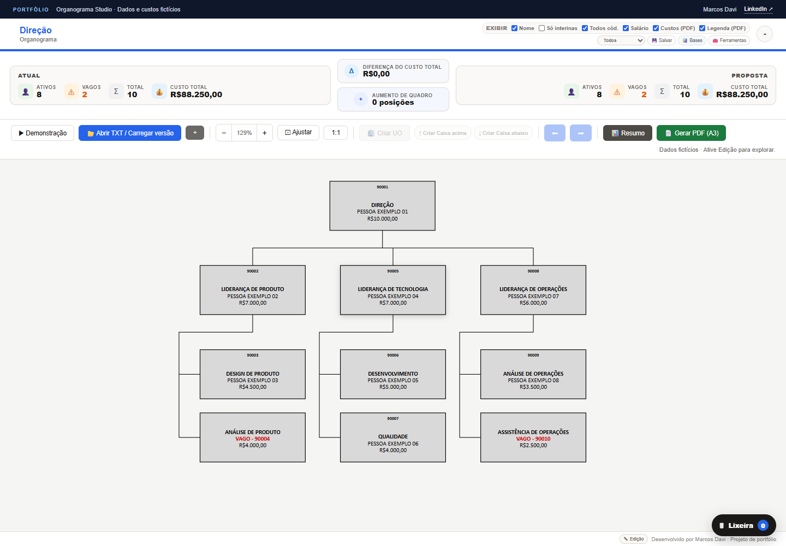

Entender o contexto
Parto do problema, do processo e das pessoas que vão usar a ferramenta.
PORTFÓLIO PESSOAL · MARCOS DAVI
Sou profissional de RH em transição para o desenvolvimento de software. Crio ferramentas que unem conhecimento organizacional, dados e interfaces simples para resolver problemas reais.
01 / SOBRE MIM
Meu ponto de partida é Recursos Humanos. A vivência com estruturas, cargos e processos me mostrou como informações importantes podem ficar dispersas ou difíceis de interpretar.
Hoje curso Análise e Desenvolvimento de Sistemas e transformo esses desafios em projetos de software. Gosto de organizar dados complexos, desenhar experiências claras e criar ferramentas que ajudem pessoas a entender melhor o que precisam decidir.
02 / PROJETOS EM DESTAQUE
Dois projetos autorais que mostram como conecto tecnologia e gestão de pessoas. Clique em um projeto para conhecer sua apresentação completa.

PROJETO 01Visualize estruturas, compare cenários de equipe e acompanhe indicadores para apoiar decisões organizacionais.
 PROJETO 02
PROJETO 02Crie e revise descrições, organize uma biblioteca e explore análises orientativas de complexidade, grading e remuneração.
As demonstrações dos projetos usam informações fictícias.
03 / MINHA ABORDAGEM
Parto do problema, do processo e das pessoas que vão usar a ferramenta.
Transformo dados e regras em uma estrutura que faça sentido para quem precisa decidir.
Dou forma à solução em uma interface direta, com atenção à experiência de uso.
VAMOS CONVERSAR?
Se você se interessou pelos projetos ou quer trocar ideias sobre tecnologia e gestão de pessoas, fale comigo no LinkedIn.